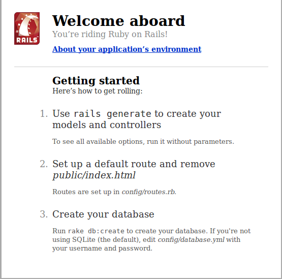
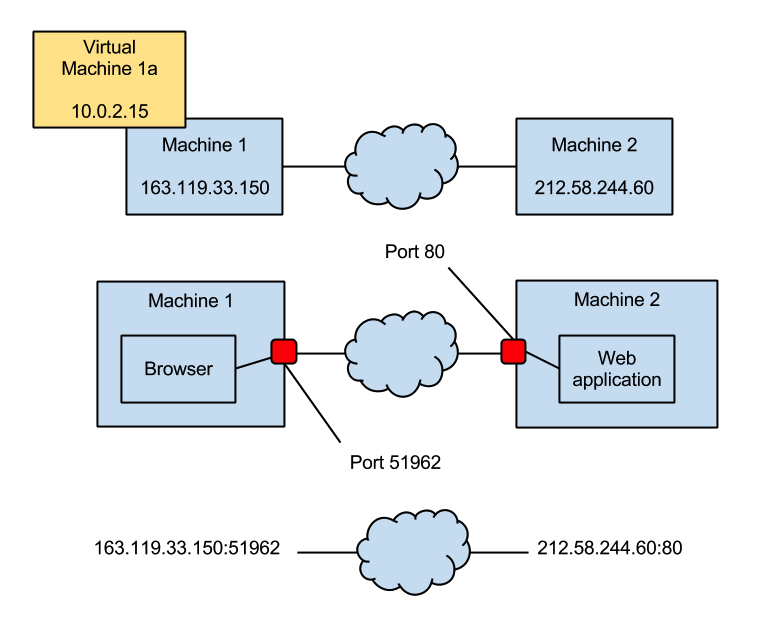

An Introduction to Web Development…
…for Business Students
Session 2
23 Apr 2013
Session 1 in 30 seconds
- Course overview
- Basics about computers
- VirtualBox, Linux (Ubuntu)
- File system
- Terminal
- Text Editor
- Basic Ruby Program
- Web application architecture basics
- Cloud computing
Housekeeping
- Course homepage: http://blog.myitcv.org.uk/lbscoding
- Schedule
- Pre-session checklist
Session 2 Pre-checklist
- Downloaded
lbscoding_v03 - Created an OpenShift Account
- Ensured you are up-to-speed with the basic concepts we covered last time
What are we going to cover today?
- Writing our first web application
- Understanding a bit about Ruby on Rails
- Deploying our application to a PaaS
Last bit of housekeeping…
…on how to interpret the slides
Create/edit a file I
# config/routes.rb
# this is a comment
Homepage::Application.routes.draw do
root :to => 'home#index'
end
Create/edit a file II
# config/routes.rb
Homepage::Application.routes.draw do
# ...
root :to => 'home#index'
# ...
end
Run a command
# Another comment
# You don't type the '$ ' - it is a shortened form of your prompt
$ cd
$ ls
dev my_dir
# I will show the output if it is relevant
Commands in normal text
- This is a list item
- Here is another
- Here is a command:
`cd /tmp` - Allows me to avoid lots of code blocks
Now let’s test this out
Update our terminal config files
# cd = /home/lbs
$ cd dev/lbscoding-env
$ git pull
# we will see more of the git command later
# it is a version control system, as opposed to "a person who is
# deemed to be despicable or contemptible"
$ cd
$ source .bashrc
Install a required package
$ sudo apt-get install nodejs
# password is lbscoding
# sudo is a special command that temporarily elevates our privileges
Right… here we go
Our development area
$ cd ~/dev
# ~ = /home/lbs
# cd = cd ~ = cd /home/lbs
# dev will contain any development files
# it was created by me when I built the virtual machine
Check our development environment
$ which ruby
/home/lbs/.rvm/rubies/ruby-1.9.3-p392/bin/ruby
$ which rails
/home/lbs/.rvm/gems/ruby-1.9.3-p392/bin/rails
$ rails --version
Rails 3.2.13
$ pwd
/home/lbs/dev
Create a new Rails application
# cd = /home/lbs/dev
$ rails new my_first_app
...
# rails new -h
A quick word on templates
- Programs can create directories, files…
- …can write code…
- …can run other programs…
`rails new XYZ`creates a template Rails web application
So what happened there?
- Rails created a template for our web application
- In fact it created a working web application
- Let’s have a quick look around…
- …but first let’s see what it does
Running a Rails application
$ rails server
=> Booting WEBrick
=> Rails 3.2.13 application starting in development on http://0.0.0.0:3000
=> Call with -d to detach
=> Ctrl-C to shutdown server
[2013-04-23 12:46:32] INFO WEBrick 1.3.1
[2013-04-23 12:46:32] INFO ruby 1.9.3 (2013-02-22) [i686-linux]
[2013-04-23 12:46:32] INFO WEBrick::HTTPServer#start: pid=3594 port=3000
That seemed to work…didn’t it?
- The command didn’t fail
- Notice we haven’t returned to a command prompt…
- …so the command is still running
- But where is the web application running?
Time to load a browser
- Applications → Internet → Chromium Web Browser
- In the address bar type: http://0.0.0.0:3000
- Bookmark this page (click the star in the right of the address bar)
- Show the bookmark bar: Ctrl-Shift-b
Great Success

Back to IP addresses…
- The web application is running on our virtual machine
- Remember the output:
`Rails 3.2.13 application starting in development on http://0.0.0.0:3000` - The IP address 0.0.0.0 is a special address for ‘this machine’ (localhost)
- 3000 is the port the browser should connect to
- 0.0.0.0:3000 is a network socket – an endpoint of an inter-process communication
A quick DNS example
# new terminal window: File → Open Terminal
$ nslookup news.bbc.co.uk
Server: 10.0.2.3
Address: 10.0.2.3#53
Non-authoritative answer:
news.bbc.co.uk canonical name = newswww.bbc.net.uk.
Name: newswww.bbc.net.uk
Address: 212.58.244.60
…continued
- Back to the browser
- Open http://212.58.244.60
- Open http://212.58.244.60:80
- Port 80 is the default port for http web sites/applications
- Port 443 is the default port for https web sites/applications
- See Wikipedia for more examples
Sockets visualised

Time to move onto the PaaS
… where we will also cover the structure of a Rails application
Install the OpenShift client
$ gem install rhc
# it doesn't matter where we are when we run this command
# only thing that matters is that we are logged in
# as user lbs
$ whoami
lbs
Setup the OpenShift client
$ rhc setup
OpenShift Client Tools (RHC) Setup Wizard
...
Login to openshift.redhat.com: pjolly.mba2013@london.edu
Password: *********
...
Generate a token now? (yes|no) yes
...
Your public SSH key must be uploaded to the OpenShift server to access code.
Upload now? (yes|no)
yes
...
Your client tools are now configured.
Check the OpenShift setup
$ rhc cartridge list
...
ruby-1.8 Ruby 1.8 web
ruby-1.9 Ruby 1.9 web
...
Tidy up our first application
# cd = /home/lbs/dev
$ rm -r my_first_app
rm: descend into directory `my_first_app'? y
rm: descend into directory `my_first_app/log'? y
...
Ctrl-c
$ rm -rf my_first_app
# be careful with the -rf option: it takes no prisoners...
Create our first PaaS-linked web app
# cd = /home/lbs/dev
$ rhc app create myfirstapp ruby-1.9
Checking your namespace ... none
...
Please enter a namespace (letters and numbers only): pjollymba2013
Your domain name 'pjollymba2013' has been successfully created
...
Creating application 'myfirstapp' ... done
...
Are you sure you want to continue connecting (yes/no)? yes
...
Confirm everything went well
myfirstapp @ http://myfirstapp-pjollymba2013.rhcloud.com/ (uuid: 5176a28a5973caf6e700015c)
------------------------------------------------------------------------------------------
Created: 3:02 PM
Gears: 1 (defaults to small)
Git URL: ssh://5176a28a5973caf6e700015c@myfirstapp-pjollymba2013.rhcloud.com/~/git/myfirstapp.git/
SSH: 5176a28a5973caf6e700015c@myfirstapp-pjollymba2013.rhcloud.com
ruby-1.9 (Ruby 1.9)
-------------------
Gears: 1 small
RESULT:
Application myfirstapp was created.
Ok, so what happened there?
- Visit http://myfirstapp-DOMAIN.rhcloud.com/
- So something is running on the PaaS
- But what?
Templates are back again…
# cd = ~/dev/myfirstapp
$ ls -l
total 40
drwxr-xr-x 6 lbs lbs 4096 Apr 23 14:44 .
drwxr-xr-x 4 lbs root 4096 Apr 23 14:43 ..
-rwxrwxr-x 1 lbs lbs 5588 Apr 23 14:44 config.ru
drwxrwxr-x 8 lbs lbs 4096 Apr 23 14:44 .git
drwxrwxr-x 5 lbs lbs 4096 Apr 23 14:44 .openshift
drwxrwxr-x 2 lbs lbs 4096 Apr 23 14:44 public
-rw-rw-r-- 1 lbs lbs 3492 Apr 23 14:44 README
-rw-rw-r-- 1 lbs lbs 664 Apr 23 14:44 thread-dumper.rb
drwxrwxr-x 2 lbs lbs 4096 Apr 23 14:44 tmp
But this is not a Rails application
$ rackup
# this is a Sinatra web application....
# another Ruby web application framework
# let's leave Frank for another day...
Local == PaaS?
- Load up http://localhost:9292/
- localhost = 0.0.0.0 = 127.0.0.1 (almost)
- Go, we can see the same output
Back to Rails
# Ctrl-c to kill the rackup command
# cd = ~/dev/myfirstapp
$ rm -rf *
# * = everything that does not begin with .
# .git and .openshift are important (more later)
$ rails new .
$ rails server
# check it's running... http://0.0.0.0:3000/
How does this get to the Paas?
- Remember the command
`git`we ran earlier? - git is a version control system (VCS)
- Records changes to a file or set of files over time
- git is a distributed VCS
- A version of our web app is local, another is in the PaaS

Updating local version
- We have made some changes since we created our app
- We deleted the Sinatra app…
- …and replaced it with a Rails app
- We need to tell git about those changes
But first…
We need to tell git who we are (one off config)
# might need to Ctrl-c to kill the rails server command
$ git config --global user.name "Paul Jolly"
$ git config --global user.email "pjolly.mba2013@london.edu"
Local commit and push
$ git add -A
$ git commit -m "Replace sinatra app with rails app"
[master 2b4aebe] Replace sinatra app with rails app
41 files changed, 1205 insertions(+), 290 deletions(-)
create mode 100644 .gitignore
...
$ git push
Counting objects: 64, done.
Compressing objects: 100% (49/49), done.
Writing objects: 100% (61/61), 26.02 KiB, done.
...
remote: Running .openshift/action_hooks/post_deploy
Auto packing the repository for optimum performance.
To ssh://5176a28a5973caf6e700015c@myfirstapp-pjollymba2013.rhcloud.com/~/git/myfirstapp.git/
0c76995..2b4aebe master -> master
Questions for you…
- Lord Green speaker event
- Language requirement
- Wednesday tutorials